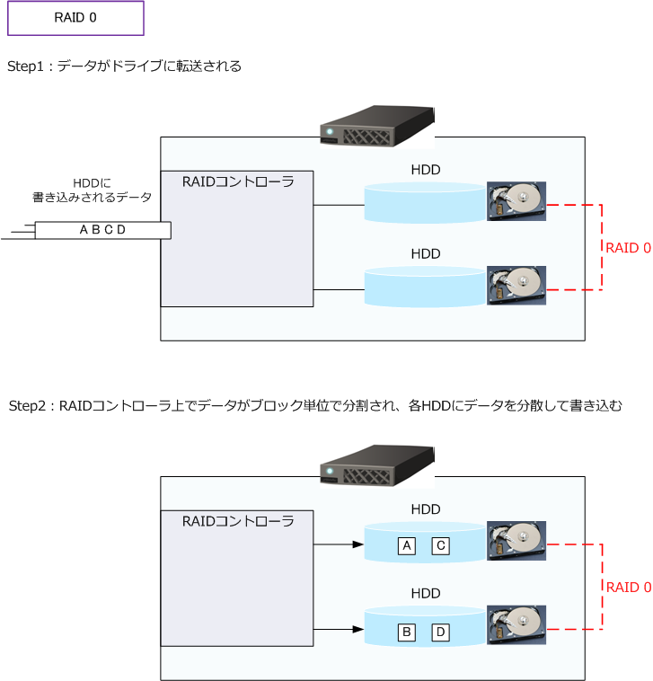
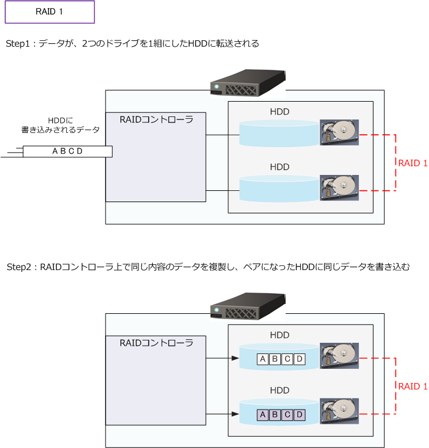
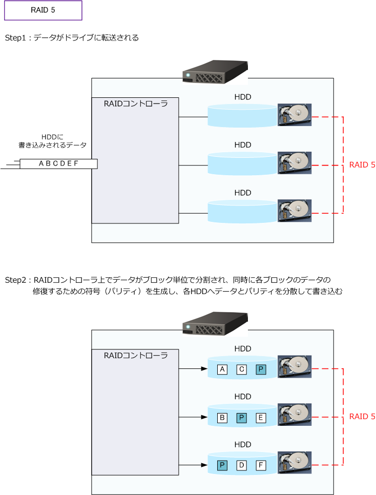
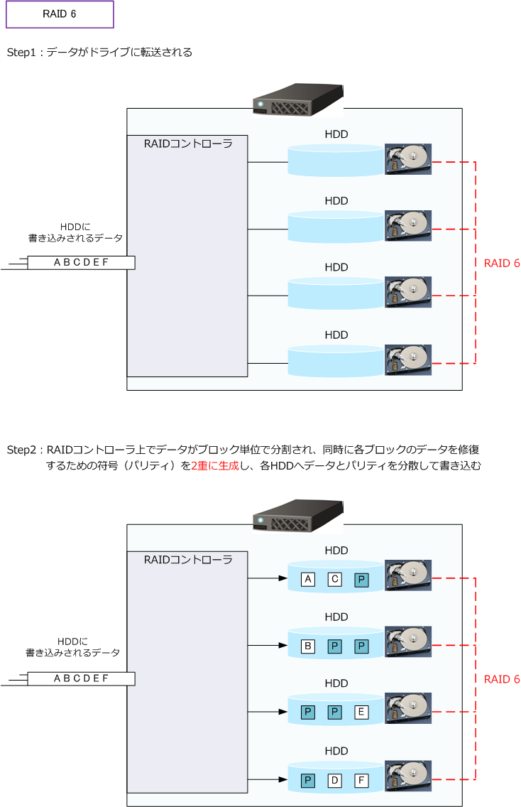
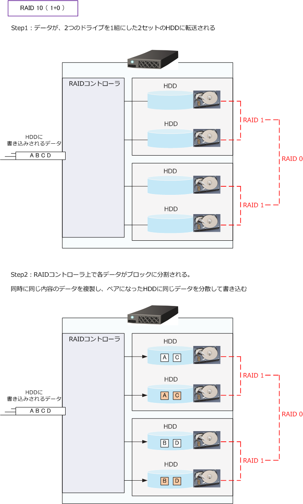

RAID：RAID0 / RAID1 / RAID5 / RAID6 / RAID10
RAID（レイド）とは
RAID（Redundant Arrays of Inexpensive Disks）とは、複数のハードディスクを組み合わせることにより 1台の仮想的なハードディスクとして認識させて冗長性を向上させる技術のことです。レイドと呼ばれます。 HDD障害が発生した場合でもデータの復旧及びアクセスを可能にしたり、複数HDDへの分散書き込みによる データ保存を高速化させたりできます。以上のとおり、RAIDは「バックアップ」とは異なる概念の技術です。
RAIDのレベル
RAIDにはRAID 0～6 までの大きく7種類があります。ただし、メーカー独自に開発したRAIDレベルもあり 実際には7種類以上あります。RAIDは「RAID＋番号」という形式で、RAIDレベルが定義されており例えば 「RAID1」「RAID5」のように表記します。また、RAID0とRAID1を組合わせた構成もあり「RAID01」や 「RAID10」のように表記します。現在では実質的に RAID2、RAID3、RAID4 は使用されていないことから 本記事では RAID0、RAID1、RAID5、RAID6、RAID10 について解説します。
RAIDレベルの違い
理論上のRAIDレベルごとの比較表は以下の通りとなりますが、RAID製品によってこの比較表の内容とは 異なる場合があります。なお、書き込み・読み出しのディスク性能はRAID0が最も優れていて、RAID10が 次に優れています。比較表の「ディスク容量の利用効率」の「 n 」は「 ディスク台数 」を指しています。
| 比較項目 | RAID0 | RAID1 | RAID5 | RAID6 | RAID10 |
|---|---|---|---|---|---|
| 耐障害性 | × | ◎ | ○ | ◎ | ◎ |
| 必要ディスク台数 | 2台以上 | 2台 | 3台以上 | 4台以上 | 4台以上 |
| ディスク容量の利用効率 | 100% | 50% | (n-1)/n% | (n-2)/n% | 50% |
| 初期導入コスト | 小 | 中 | 中 | 大 | 大 |
RAID 0
RAID0では、複数のハードディスクに同時に分散して読み書きを実行します。これにより、アクセスの高速化 を実現します。RAID0は「ストライピング」とも呼ばれています。RAID0では複数のHDDに同じデータが保存 されていないことから、このRAID構成のみ冗長性や耐障害性がありません。RAID0は読み書きの高速化を実現 するものの耐障害性がないことから、RAID1やRAID5と組み合わせて使用されることが多くあります。

RAID0では、1つのHDDに障害が発生するとデータが復旧できず、全てのデータが失われることになります。
RAID 1
RAID1では、複数のハードディスクに同じデータを書き込みことでハードディスクの耐障害性を実現します。 RAID1は「ミラーリング」とも呼ばれています。RAID1では同じデータを2台以上のディスクに書き込むので ディスク容量の利用効率が50%以下になってしまうデメリットがあります。また、読み出し書き込みに対する 速度はRAID0の方が優れています。

RAID1では、1つのHDDに障害が発生してもペアとなるもう1つのでHDDで継続してデータ利用できます。
RAID 5
RAID5では、データからパリティ（誤り訂正符号）を生成し、3台以上のハードディスクに分散して書き込み します。RAID5は、RAID0のように複数のディスクに分散しているため読み出し性能が優れているだけでなく 1台のHDDに障害発生した場合でも、残りのHDDにより継続利用することが可能です。

RAID5は耐障害性と高い利用効率が得られるバランスのよい構成であり、広く利用されているRAID構成です。
RAID 6
RAID6では、データからパリティ（誤り訂正符号）を生成し、4台以上のハードディスクに分散して書き込み します。RAID5と異なる点は、ハードディスク台数が4台以上である点、許容されるHDDの障害台数が2台と なる点、RAID5よりもパリティが増える分はハードディスクの利用効率が下がる点です。RAID6は、その他の RAID0、RAID1、RAID5 に比べて耐障害性の高いRAID構成です。ただし、二重にパリティを生成するため、 RAID5よりもさらに書き込みが速度が低下する点はデメリットとなります。

RAID 10（1＋0）
RAID10はRAID1（ミラーリング）とRAID0（ストライピング）を組み合わせた構成です。RAID10では、 高速化を実現するRAID0と、耐障害性のあるRAID1を組み合わせることで高速化と耐障害性を実現します。 RAID10では最低4つのドライブが必要となります。

RAID0とRAID1を組み合わせたRAID構成は以下の2種類があります。RAID0とRAID1のどちらを下層で 行うかにより名称が異なります。
・ RAID10（1+0）： RAID1（ミラーリング）された領域をRAID0（ストライピング）で構成 ・ RAID01（0+1）： RAID0（ストライピング）された領域をRAID1（ミラーリング）で構成
耐障害性の観点からRAID10の方が優れています。また、RAID01とRAID10とでは速度の違いがないこと からも、RAID01が採用されることは先ずありません。